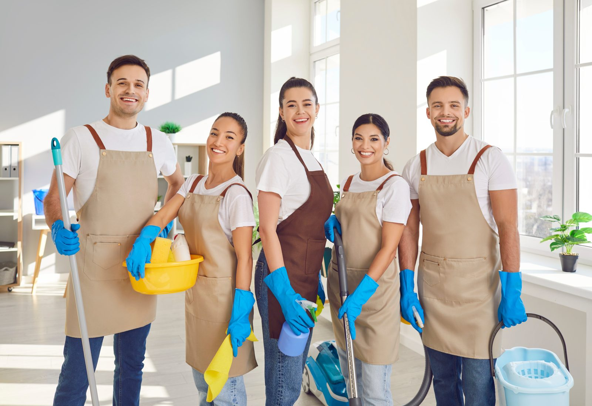

Unterhaltsreinigung
Dauerhaft sauber · nach festem Plan
Wir halten Ihre Räume regelmäßig sauber: Böden, Oberflächen, Sanitär und Gemeinschaftsbereiche. Frequenz und Umfang stimmen wir auf Ihren Bedarf ab · täglich, wöchentlich oder individuell.
BödenSanitärOberflächenGemeinschaftsräume